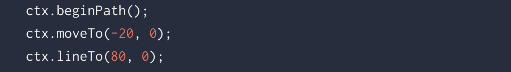

Gráficos Web
D3.js y HTML5
Conceptos Fundamentales
HTML
“HyperText Markup Language (HTML) es el lenguaje estándar de marcado para crear páginas y aplicaciones web.[...] HTML describe la estructura de una página a partir de etiquetas que en algunos casos dan cuenta del contenido de la misma.”
CSS
“Cascading Style Sheets (CSS) es un lenguaje de hojas de estilo utilizado para describir la presentación de un documento escrito en lenguaje de marcado. [...] el lenguaje puede ser aplicado a cualquier documento XML, incluyendo XML plano, SVG y XUL.”
JavaScript
“JavaScript es un lenguaje de programación de alto nivel, dinámico, no tipado e interpretado. [...] Junto con HTML y CSS, JavaScript es uno de las tres principales tecnologías de la producción de contenido web; la mayoría de sitios web lo utilizan, y todos los exploradores web modernos lo soportan sin necesidad de plug-ins.”
SVG
“Scalable Vector Graphics (SVG) es un formato de imagen vectorial basado en XML. Se utiliza para gráficos bidimensionalesis y soporta tanto interactividad como animación. [...] Las imágenes SVG y su comportamiento se definen en archivos de texto XML. Esto significa que pueden ser buscadas, indexadas y comprimidas.”
Novedades en HTML5

Estructura de página
Etiquetas que permiten estructurar la página y brindarle sentido semántico a su contenido
Formularios
Nuevos atributos para los tipos de campos de ingreso de datos <input>:
<input type="date">
<input type="time">
<input type="range">
<input type="color">
<input type="search">
...
Nuevo elemento <output>:
Multimedia: <video>
Etiqueta que permite añadir videos
<video width="500" autoplay controls>
<source src="./imgs/video.mp4" type="video/mp4">
</video>
Multimedia: <audio>
Etiqueta que permite añadir pistas de audio
<audio controls>
<source src="http://www.noiseaddicts.com/samples_1w72b820/2514.mp3" type="audio/mpeg">
</audio>
Otros APIs
HTML5: Canvas

Crear elemento
Primero se debe crear el elemento canvas con las dimensiones deseadas:
Obtener contexto
En el script de JS se debe obtener el elemento canvas y después el contexto de renderizado para gráficos 2D:
Dibujar trazos
Para dibujar, primero se definen los estilos de línea y relleno, después se traza la figura y por último se aplican los estilos:
Dibujar trazos
Para realizar trazos complejos, se utiliza la función beginPath(), que toma los comandos futuros para construir el trazo. Una vez se llama esta función, se debe indicar la posición de inicio del nuevo trazo:

Hacer animaciones - Paso 1
En primer lugar, se debe limpiar el canvas para borrar trazos que hayan sido pintados anteriormente:
Hacer animaciones - Paso 2
Después se debe salvar el estado del contexto para asegurarse de que el estado inicial sea el que se utilice cada vez que se renderiza un frame:
Hacer animaciones - Paso 3
Luego se debe trazar la figura a animar, y resetear el estado del contexto antes de renderizar otro frame:

Hacer animaciones - Paso 4
Finalmente se debe especificar la función que se ejecutará en cada frame de la animación. Esta es una función callback:
Reloj Animado
HTML5: SVG
Crear vectores
Primero se deben crear los elementos a animar en un editor de vectores como Adobe Illustrator:
Exportar SVG
Después se debe exportar la pieza en un archivo SVG:
Organizar SVG
Para poder animar cada elemento, se deben asignar identificadores a cada uno:
Animar globo
Para animar el globo de forma que se mueva de arriba a abajo, se crea una animación popup con 3 etapas y se asigna al globo con algunas características:
Animar nubes
Para animar las nubes de forma que se muevan de un lado hacia el otro, se crea una animación fall para trasladarlas y se asigna a cada nube con sus respectivas características:
Animación terminada
D3.js
Herramientas a usar:
Paso 1: Configurar D3.js
Link ActualPrimer acercamiento:
Link ActualManos a la obra:
Link ActualD3 con esteroides
Bibliografia:
- https://www.dashingd3js.com/adding-an-svg-element
- https://square.github.io/intro-to-d3/data-binding/
- http://blockbuilder.org/
- http://bl.ocks.org/